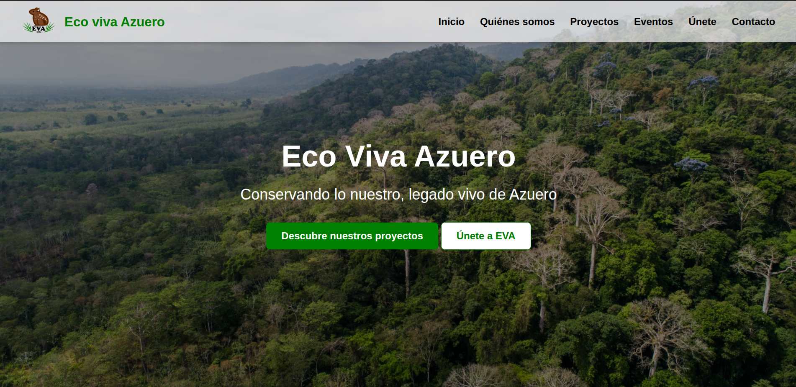

Hola, soy JvWyatt
Microbiólogo & Desarrollador
Bienvenido a mi Dev‑Lab, un espacio donde convergen ciencia, tecnología y divulgación. Me interesa la biología molecular y bioinformática, estoy aprendiendo desarrollo y ciencia de datos. Busco unir ciencia y tecnología para transformar ideas en proyectos de impacto.
 LinkedIn
LinkedIn
 Gmail
Gmail
 GitHub
GitHub
Proyectos destacados

Eco Viva Azuero
Web para OBC ambiental
Suits Tattoo Studio
Web para estudio de tatuajes
Paso Viejo Tour
Próximamente...
Videos Destacados
Publicaciones Científicas
Microbioma bacteriano de suelo agrícola en Tonosí, Los Santos, Panamá
Se caracterizó el microbioma bacteriano de suelo agrícola dedicado al cultivo de arroz en Tonosí, provincia de Los Santos, Panamá. Se empleó metabarcoding de la región V4 del gen 16S rRNA con 20 muestras secuenciadas en la plataforma Illumina MiSeq.
Palabras clave: Suelo, Diversidad, Taxonomía, Microbioma, Metabarcoding
Evaluación del potencial biorremediador de Pseudomonas aeruginosa frente al propiconazol
Se evaluó el potencial biorremediador de Pseudomonas aeruginosa aislada de suelos con vocación arrocera del Instituto Profesional y Técnico Agropecuario de Tonosí frente al propiconazol.
Palabras clave: Suelo, Biorremediación, Pseudomonas, Propiconazol, Residualidad